A 30,000-person campus with its news scattered across group chats. I built the page that consolidated it — brand, format, growth and partnerships — then sold local businesses a channel to reach it.
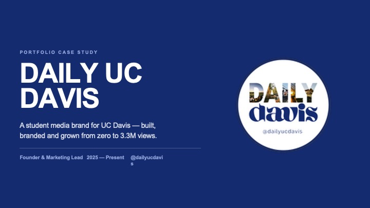
Students were hunting campus news, events and food across a dozen group chats. The pages that existed posted irregularly, with no recognizable voice and no reason to follow one over another.
Local businesses had the mirror-image problem: a campus full of customers and no trusted student channel to buy. One gap, two paying sides.
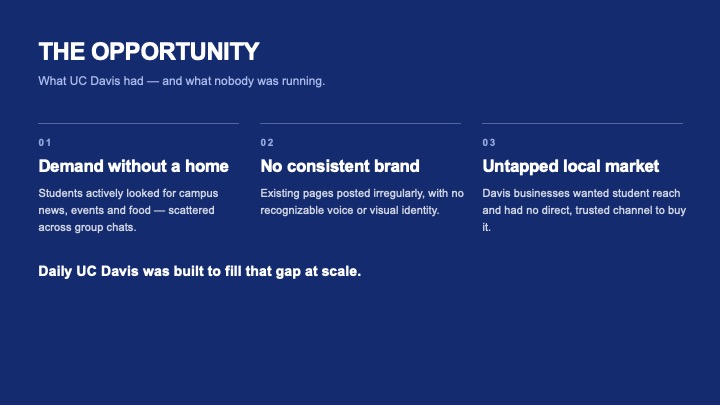
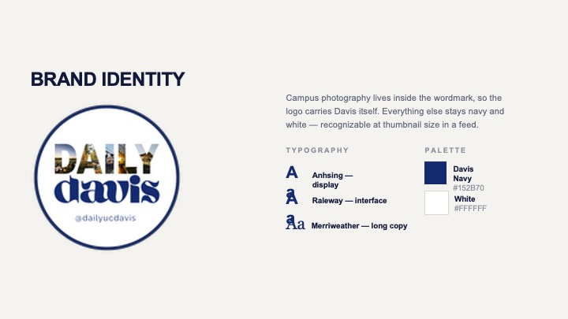
A wordmark, one typeface, and a fixed palette — built so a student scrolling fast knows the post is ours before they read a word. Consistency was the whole strategy: the same shape every time is what turns a page into a habit.
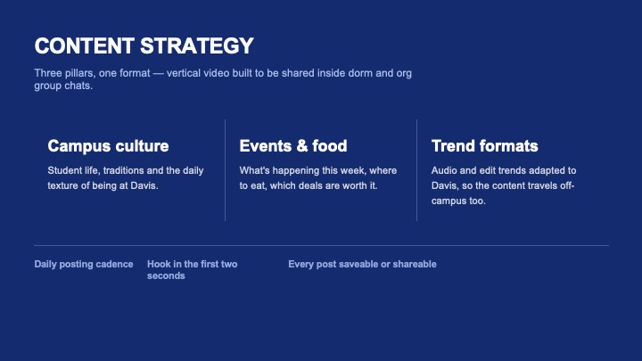
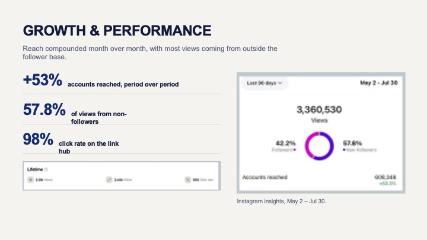
20+ business collaborations sourced and delivered — local shops, campus organizations, and national brand ambassadorships — with the promotion built inside the existing format instead of bolted onto it.
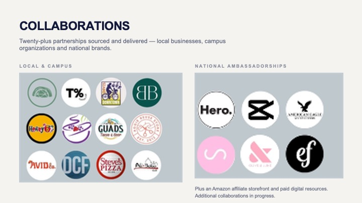
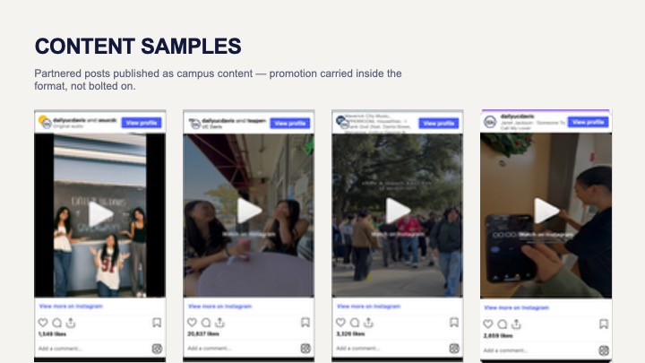
Unprompted messages asking us to post things, correct things, and cover things — the point at which a page stops being an account and starts being infrastructure students rely on.
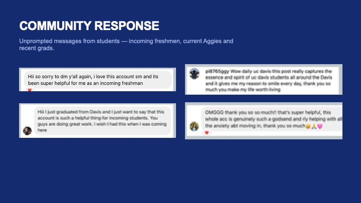
Every slide, in order. Click any image to open it full size.
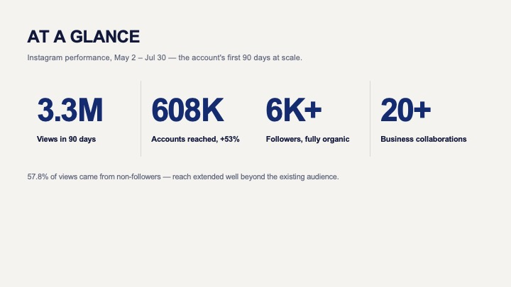
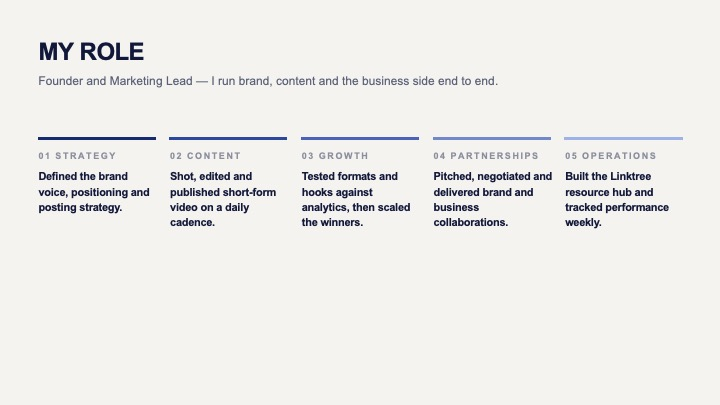
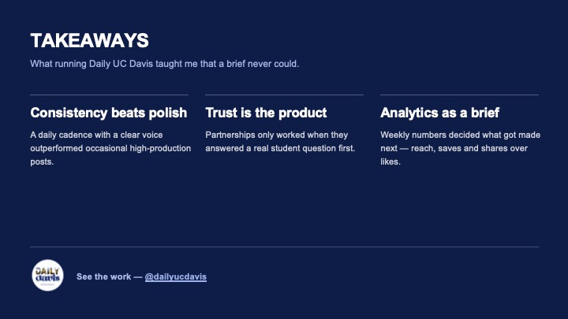